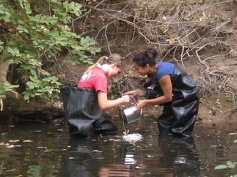
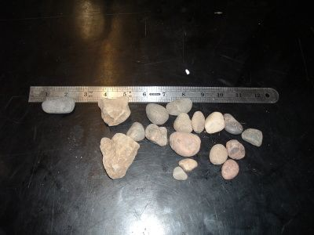
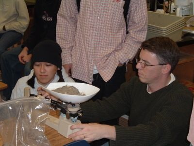
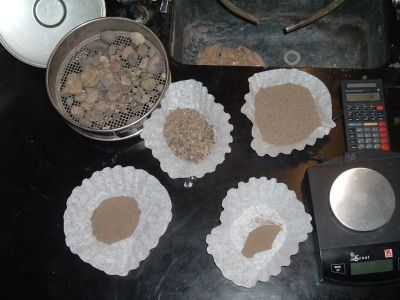

SEDIMENT
Sediment Analysis examines the health of the creek by means of assessing the size, type, and chemical composition of the creek's sediment.
Sediment Students
Gathering some sediments for analysis
Sediment Students
Measuring rocks collected from the creek
..Sediment Students
massing the sediment sample
Sediment Students
Collected sediment samples.
At the creek, sediment samples are collected at each site through the use of an Ekman Dredge. These samples are taken to the lab where they are sieved, weighed, and tested for their chemical and soil composition. The four chemical aspects that the Study tests are pH level, nitrogen, phosphorus, and potassium. These four chemical compositions act as indicators of the health of the creek, as sudden changes in any of the chemical levels can present a danger to all life within the creek.
At the same time, the amount of silt, which also serves as a health indicator, is recorded as a percentage of the entire sample, for too much silt in the creek indicates high rates of erosion and siltation. The Sediments study shares its data with Biological Assessment and Long Mapping for further analysis of the creek.
STUDY FILES:
Sediments Protocol2014 Sediments Spring Data Analysis
2014 Sediments Spring Raw Data
2013 Sediments Fall Data Analysis
2013 Sediments Fall Raw Data
Site A-8 Fall 2011 Analysis Site B Fall 2011 Analysis
Site C-5 2-3 Fall 2011 Analysis
Site C-5 5-6 Fall 2011 Analysis
Site D-1 2-3 Fall 2011 Analysis
Site D-1 5-6 Fall 2011 Analysis
Site D-2 Fall 2011 Analysis
Site D-3 5 Fall 2011 Analysis
Site D-3 6 Fall 2011 Analysis
Site E-2 Fall 2011 Analysis
Site E-3 Fall 2011 Analysis
Site F Fall 2011 Analysis
Site G Fall 2011 Analysis
Complete Sediments Fall 2011 Analysis [Download]